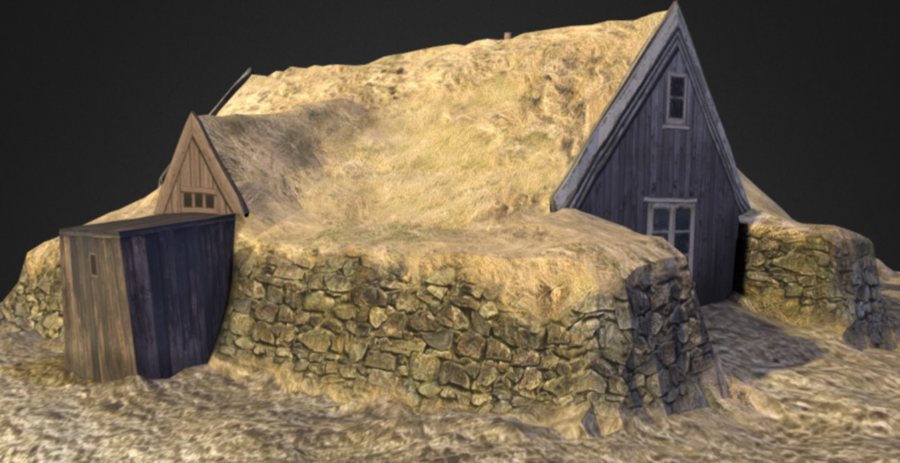

Þrívíddarlíkan
Þrívíddarlíkan af Sölvhóli eins og bærinn leit út í lok 19. aldar, grundvallað á teikningum sem Hjörleifur Stefánsson arkitekt útbjó út frá úttektum sem gerðar voru á bænum og ljósmyndum sem hafa varðveist. Páll Heimir Pálsson gerði líkanið að ósk Hjörleifs sem manna mest hefur rannsakað byggingarlag torfbæja í Reykjavík.
Smellið hér til að opna þrívíddarlíkanið sem snúa má á alla kanta. Sjón er sögu ríkari!

Þrívíddarlíkan af Sölvhólilok 19. aldar